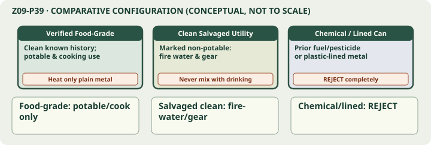

Z09-P39 · Tools and construction · Adapted historical material
Assess improvised utility containers for dry goods versus potable limits
Separate clean food-grade water/food vessels strictly from salvaged or natural utility containers.
When it applies · Evaluating salvaged cans, plastic jugs, birch bark or cloth sacks for camp transport, fire water or storage.
Equipment · Known clean food-grade vessels for potable use; separate marked salvaged vessels strictly for non-potable utility.

Actions
- Maintain the strict Z04 potable boundary: drinking and cooking water belong ONLY in intact, sanitized food-grade containers with known clean prior history—never in salvaged fuel, oil, pesticide or chemical jugs.[W06, W13, W01]
- Limit salvaged unknown containers or natural bark/cloth pouches strictly to non-potable utility roles (carrying extinguishing water for campfires, gathering dry tinder, holding stakes or sorting dry tools).[W06, C02, ED]
- Never heat water or food in soldered, plastic-lined, galvanized or unknown-coating metal cans; heating unknown coatings releases toxic fumes or leaches residues.[W01, W02, ED]
Failure recognition · Boiling drinking water inside a salvaged painted paint-thinner tin or storing potable water in a rinsed antifreeze jug.[W01, W06, W13]
Verify · Confirm every potable vessel has verified food-grade history and every salvaged utility container is clearly marked non-potable.[W06, W01, ED]
Stop or change course · If no verified safe potable container exists, do not improvise boiling in toxic or unknown vessels—rely on sealed commercial supplies or request help.[W01, W06, W09]
Evidence and editorial notes
- C02 · USDA Forest Service / Smokey Bear · Smokey Bear’s Campfire Safety Guide (agency PDF)
- Section: Build your campfire; choose a location · Conditions: Where campfires are currently permitted
Support: Use an established fire ring where required or available. Protect the area from nearby combustible materials, avoid windy conditions and keep water ready.
Limitations: Site clearances vary by fuel load, slope, and wind; no universal safe radius fits all terrain. · Conflicting evidence: None; aligns with USFS-FIRE.
Editorial note: Grounds site-selection and ring-preparation procedures. · Specialist reviewer: Fire prevention and land management
Primary source · checked 2026-11-24 - W01 · CDC · How to Make Water Safe in an Emergency (2024-09-19)
- Section: Water with fuel or toxic chemicals in it · Conditions: Suspected fuel, toxic chemicals or radioactive contamination
Support: Use a different safe supply. Standard boiling and microbial disinfection do not make this water safe.
Limitations: Does not list contaminant-specific lab remediation; applies to emergency consumer decisions only. · Conflicting evidence: None across CDC/EPA emergency guidance.
Editorial note: Used as upstream hard-stop gate prior to any field treatment card. · Specialist reviewer: Drinking-water safety and public health
Primary source · checked 2026-11-24 - W02 · CDC · How to Make Water Safe in an Emergency (2024-09-19)
- Section: Boil > Steps for boiling water · Conditions: Microbiologically suspect water with acceptable chemical source; portable heat and safe vessel
Support: Clarify cloudy water first. Rolling boil for one minute; above 6,500 feet for three minutes. Cool and cover in sanitized containers.
Limitations: Does not remove dissolved metals, nitrates, fuel, or cyanotoxins. · Conflicting evidence: Older Track B B009 omitted the 6,500 ft threshold; CDC threshold governs.
Editorial note: Require explicit timer verification after rolling boil starts. · Specialist reviewer: Drinking-water safety and public health
Primary source · checked 2026-11-24 - W06 · CDC · How to Create an Emergency Water Supply (current web edition)
- Section: How to store emergency water; Safe storage containers · Conditions: Potable water intended for emergency storage
Support: Prefer sealed commercial water or clean food-grade tight-closing containers. Avoid containers that held toxic chemicals.
Limitations: Container shelf durability and rotation depend on plastic/material type and storage heat. · Conflicting evidence: None; reinforces strict raw-vs-clean segregation.
Editorial note: Used to enforce labeling and dedicated raw/potable vessel separation. · Specialist reviewer: Drinking-water safety and public health
Primary source · checked 2026-11-24 - W09 · CDC · Water Treatment Options When Hiking, Camping, or Traveling (current web edition)
- Section: Overview and water treatment methods · Conditions: Hiking or camping where no safe source is confirmed
Support: Even clear water can contain germs. Assess the supply and carry safe water or an appropriate treatment method.
Limitations: Visual clarity never detects microbes or dissolved chemical contaminants. · Conflicting evidence: None across CDC/NPS/EPA sources.
Editorial note: Reinforces clarity-is-not-potability invariant across all Z04 cards. · Specialist reviewer: Drinking-water safety and public health
Primary source · checked 2026-11-24 - W13 · CDC · How to Clean and Sanitize Water Storage Containers (current web edition)
- Section: How to Clean and Sanitize Water Storage Containers · Conditions: Reusable food-grade water storage containers before filling with potable water
Support: Wash with dish soap and warm water, sanitize interior surfaces with a labeled dilute bleach solution for at least 30 seconds, and rinse with safe water before filling.
Limitations: Damaged, cracked, or chemical-contaminated containers cannot be rehabilitated by washing. · Conflicting evidence: None; complements CDC-S container rules.
Editorial note: Separates routine washing from sanitizing and air-drying/rinsing. · Specialist reviewer: Drinking-water safety and public health
Primary source · checked 2026-11-24
Source lineage · B009/B010 vessel notes and CDC storage; adapted historical material · Classification · Adapted historical material.